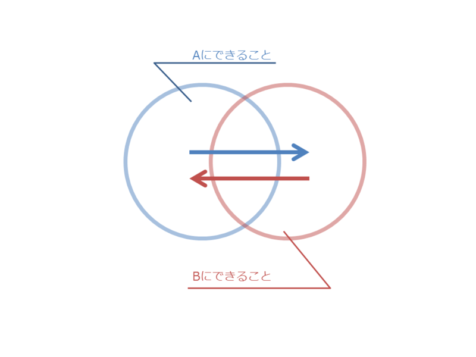
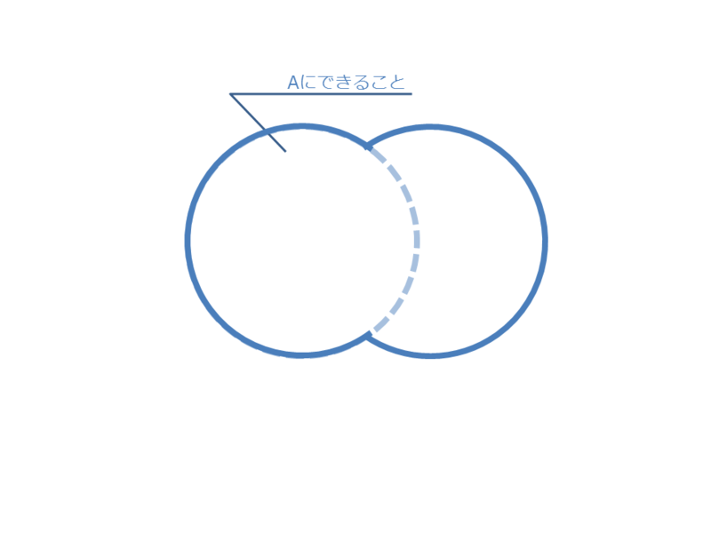
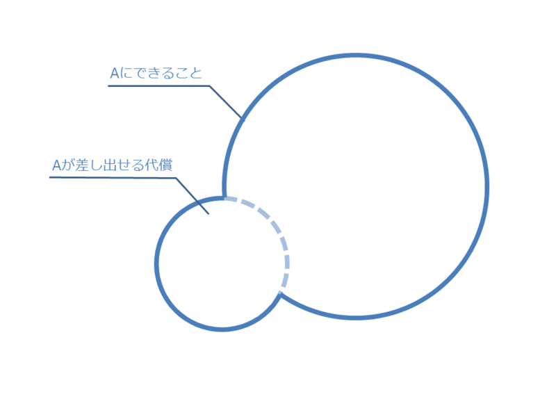

なぜ相互に贈与（交換）するのか
公開日：
これまで「なぜ相互に贈与（交換）するのか」についてはあまり考えてこなかったので、今日はそれを考える。
異なるモノをやりとりする

異なるモノをやりとりする理由は、わかりやすい。たとえば、作りすぎて余った筑前煮を隣近所で贈答（交換）して肉じゃがにすれば、食卓を少し豊かにすることができる（やったね！）。
筑前煮を作るのは得意だが肉じゃがは苦手な人A*1が、肉じゃがはそこそこ作るが筑前煮は面倒臭いと思っている人B*2が交換すれば、効果はより一層大きいものとなる。経済学では、これを社会的分業と呼ぶ。（資本）流通の循環と社会的分業の発見から、近代経済学は始まった*3。
――それは脇に置いといて。

このときAは、自分が本来備える能力以上の「可能性」*4を獲得している。これこそが「なぜ相互に贈与（交換）するのか」に対する答えになるのだろう（ありきたりだった！）。頭の悪い子は、頭の良いこと（対等の）互恵関係を結ぼう。力の弱い子は、力の強い子と（対等の）互恵関係を結べばよい。そうすれば、手っ取り早く自分の「可能性」を拡張することができる。ヒトが街に集まる理由も、結局はそういうことなのではないかな。「都市の空気は自由にする」。
ただし、その可能性の「濃度」――または「実現可能性」とでも呼ぶべきモノは薄まっている。

というのも、この可能性の代わりに差し出せる「代償」は限られているからだ。
大きな社会にアクセスすれば、より大きな可能性を得ることができる。しかし、代償が必要だ。なにか他の人と差別化できる特技でもあればよいのだが、アクセスする社会が大きければ大きいほど、それと自分を差別化するのはむずかしくなる。他者と差別化できなくなったヒトは、自分がもつ唯一の財産を代わりに差し出すことになる。マルクスに言わせれば、それは自分自身――つまり労働力――だ。自分ならば、「時間」とでも答えようか。僕達はそこで、なけなしの時間を売って口を糊するだけの存在になる。
逆に言えば、限られた「代償」しかもたなくても、それをうまく利用すればそれを大きく見せかけることもできる。たとえば、「可能性」のハブになることが考えられる。現代で言えばマスメディアがそうだし、俗に人脈をもつという人々がそれに相当する。ハブとなる人物ですら、当然代償としてもつものは限られている。しかし、それで得た可能性を途切れさせることなくうまく前借り・転売・循環させれば、（ストックとしてではなく）フローとして多くの可能性に触れることができる。ひとつのノードでより多様な可能性にアクセスできることは、それ自体が差別化可能な「可能性」として他者に認識される*5。これについては、また考えがまとまった時にお話ができるだろう。
同じ（似たようなもの）モノをやりとりする
――それは脇に置いといて。
異なるモノをやりとりする場合は、「可能性の拡大」でだいたいの説明がついた。しかし、それだと同じ（似たようなもの）モノをやりとりする場合を説明することができない。相互贈与関係においては、時間をおいて同じ物（や、それに似たようなもの）をやりとりする場合が多々ある。お歳暮にハムだの石鹸を贈りあったりね。
")
- 作者: 伊藤幹治
- 出版社/メーカー: 筑摩書房
- 発売日: 2011/07/13
- メディア: 単行本
- クリック: 2回
- この商品を含むブログ (3件) を見る
結論を急ぐと、これは「お互いに相互贈与関係にあることの（定期的な）確認」といえるのではないかと思う。
まえにも論じた（繰り返された贈与の過程について - だるろぐ）けれど、相互贈与・交換はまったくの"赤の他人"関係では生じ得ない。日頃からよく贈答を行う関係ができあがっていたり → なんらかの同胞意識（故郷・民族・国家・宗教）をもっていたり → 法によって取引が保護されていたりといった、素地となる関係が必要とされる。一見無駄にみえる同じモノのやりとりも、その関係のメンテナンス作業だと思えば、案外無駄ではないのがわかる。
また、同じモノのやりとり――維持された相互贈与関係――には、もう一つ利点がある。時間的なリスクの分散が可能だということだ。
たとえば、余裕がないので今は少ししか返礼できないが、余裕のある場合に多めに返礼するといったことだ。また、返礼する時間を伸ばしたり縮めたりといったことも考えられる。人間誰しも、予測不可能なことに襲われることはある。けれど、互いに贈答しあって、贈与（純粋贈与）を関係性の中にプールしておけば、相手が許す限りにおいて、それをいつでも引き下ろすことができるだろう。多少の無理だって聞いてもらえる（あとで返せるのならば）。その点、贈与関係は安心の預金口座と呼んでいいのかもしれない。
また、冠婚葬祭も相互贈与を基盤とした時間的なリスクの分散ととらえることができるかもしれない。結婚はともかく*6、葬式はかならず人生で一度、棺桶の中で経験する。そしてそれには往々にして多額の費用が必要となる。そこにご祝儀や香典といった相互贈与システムがあれば、多少なりとも負荷を平均化できるだろう。とくに葬式は、死んだ本人ができることではないので、生前に相互贈与関係を築いておくのは重要だ。